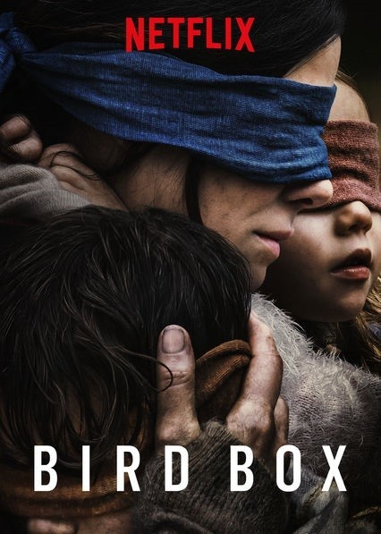

2.Bird Box

등급: 15세 관람불가
장르: 드라마,SF,스릴러
국가: 미국
러닝 타임: 124분
소개: 눈을 뜨고 세상을 보면 끔찍하게 변해버리는 괴현상에 인류는 종말을 향해 치닫고,
그 지옥 같은 상황에서 두 아이를 지켜야하는 맬러리(산드라 블록)의 극한의 사투를 그린 이야기
링크:
3.Spenser Confidential
출시일: 2020.03.16
등급: 청소년 관람불가
장르: 범죄,드라마,미스터리
국가: 미국
러닝 타임: 110분
소개: 탐정 스펜서가 돌아왔다! 출소하자마자 미궁의 살인 사건에 얽힌 스펜서. 보스턴 지하에 숨은 추악 진실은 무엇일까.
링크:
4.6 Underground
출시일: 2019.12.13
등급: 청소년 관람불가
장르: 액션
국가: 미국
러닝 타임: 128분
소개: 존재하지 않았던 것처럼 개인의 모든 기록을 지우고 스스로 '고스트'가 된 여섯명의 정예요운이 펼치는 지상 최대의 작전을 담은 블록버스터
링크:
5.Murder Mystery
장르: 액션,코미디,드라마,미스터리,멜로/로맨스
국가: 미국
소개: 결혼하고 처음으로 떠난 유럽 여행. 뉴욕 경찰 닉과 미용사인 그의 아내 오드리는 황당한 누명을 쓴다. 요트 안에서 억만장자를 살해했다니? 이대로는 억울해서 못살아!
링크:
더많은 영화가 궁금하다면 아래 링크를 참조하길 바란다.
링크: